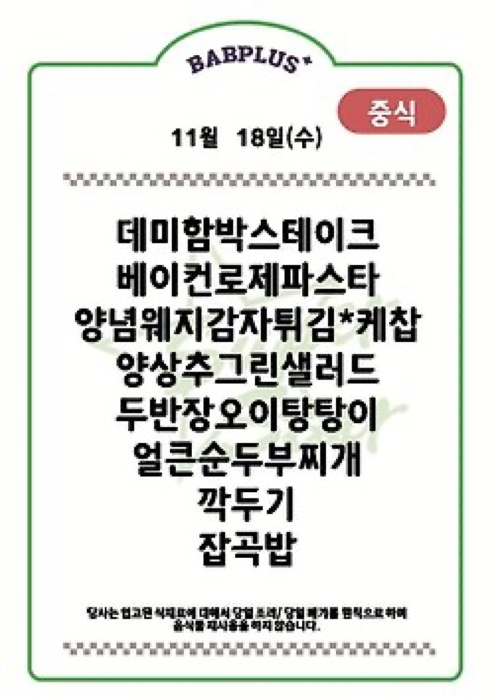
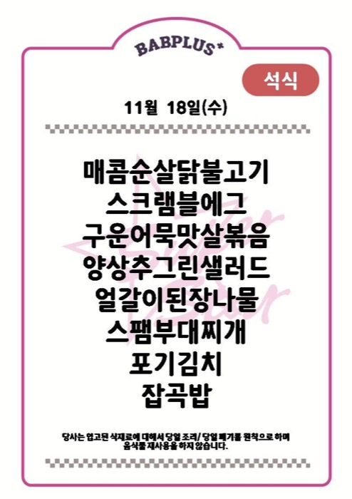
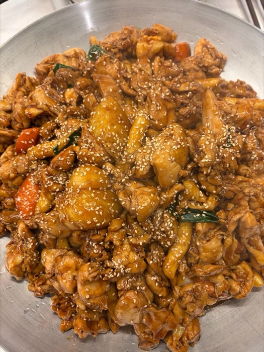

밥풀러스 카카오 채널(pf.kakao.com/_hqGbn)에 올라오는 식단 중 월요일과 금요일 것만 골라 Discord 채널로 보내는 봇의 수집 주기, 전송 시각, 봇 세팅, 구현 방법을 정리했습니다. 봇은 식단 전용이 아니라 기능을 계속 붙여 나갈 범용봇 코딩머신로 만들고, 식단 알림은 그 첫 기능으로 넣습니다. 실행은 집에 있는 N100 서버에서 상시 실행 프로세스로 합니다.
무엇을 언제 가져와서 어디로 보내는지 한눈에 봅니다.
월/금 식단 글은 전날 20:00에 예약 발행됩니다. 이 글 하나에 중식과 석식 메뉴판이 모두 들어 있어서 한 번만 가져오면 됩니다.
메뉴는 이미지로만 올라옵니다. 1단계에서는 메뉴판 이미지를 그대로 보내고, 텍스트 추출(OCR)은 나중에 붙일 수 있게 여지를 남겨 둡니다.
봇 전용 서버와 채널을 새로 만들었습니다. 보내는 주체는 범용봇 코딩머신이고, 개발자 포털에 다시 로그인해야 해서 아직 만들지 못했습니다.
2026-11-17에 채널 API를 직접 호출해서 확인한 내용입니다.
카카오 채널 웹 페이지가 내부적으로 쓰는 JSON API가 로그인 없이 응답합니다. HTML을 파싱하거나 브라우저를 띄울 필요가 없습니다.
GET https://pf.kakao.com/rocket-web/web/profiles/_hqGbn/posts User-Agent: Mozilla/5.0 // 다음 페이지: ?since=<마지막 글의 sort 값>
| 글 제목 | 공개 시각 (KST) | 처음 작성 / 마지막 수정 | 이미지 |
|---|---|---|---|
| 11/16 (월) 메뉴 | 11/15 (일) 20:00 | 11/15 02:52 / 11/16 10:51 | 12장 |
| 11/16 (월) 석식메뉴 | 11/16 (월) 16:00 | 11/15 02:54 / 11/16 17:26 | 9장 (음식 사진) |
| 11/17 (화) 메뉴 | 11/16 (월) 20:00 | 11/15 02:55 / 11/17 10:50 | 11장 |
| 11/17 (화) 석식메뉴 | 11/17 (화) 16:00 | 11/16 22:51 / 11/17 17:23 | 9장 (음식 사진) |
| 11/18 (수) 메뉴 | 11/17 (화) 20:00 | 11/16 22:53 / 수정 없음 | 2장 (중식/석식 메뉴판) |
updated_at 변경).793x1122이고, 나중에 붙는 음식 사진은 3024x4032 이상입니다. 음식 사진은 메뉴판 앞쪽에 끼워져서 11/16 (월) 글은 12장 중 마지막 2장이 메뉴판이었습니다. 순서가 아니라 크기로 골라야 합니다.


출처: 밥풀러스 카카오 채널 게시글 이미지 (2026-11-17 조회, kakaocdn 원본을 줄여서 저장).
본문은 "맛있게 드세요 😊"뿐이고 이미지 캡션도 비어 있습니다. 메뉴를 텍스트로 받으려면 OCR이 필요합니다. 메뉴판은 흰 배경에 큰 글씨라 OCR 난이도는 낮아 보입니다.
발행 시각에 맞춰 수집하고, 늦게 올라오거나 실행이 지연되는 경우를 재시도로 흡수합니다.
| 작업 | KST | cron (KST) | 내용 | 범위 |
|---|---|---|---|---|
| 메뉴판 전송 | 일/목 20:05부터 21:00까지 10분마다 | 5-55/10 20 * * 0,4 | "(월) 메뉴" 또는 "(금) 메뉴" 글을 찾아 메뉴판 이미지를 보냅니다. 이미 보냈으면 아무것도 하지 않습니다. | 1단계 |
| 실패 알림 | 일/목 21:05 | 5 21 * * 0,4 | 그날 메뉴판을 보내지 못했으면 "식단 글을 찾지 못함"을 같은 채널에 남깁니다. | 1단계 |
| 음식 사진 전송 | 월/금 11:00, 11:15 | 0,15 11 * * 1,5 | 같은 글의 updated_at이 바뀌었으면 추가된 사진만 보냅니다. | 선택 |
| 석식 사진 전송 | 월/금 17:30 | 30 17 * * 1,5 | "(월) 석식메뉴", "(금) 석식메뉴" 글의 사진을 보냅니다. 석식 사진은 16:00 공개 뒤 17:20쯤까지 채워집니다. | 선택 |
N100 서버 시간대가 Asia/Seoul 이고, 스케줄러도 Asia/Seoul 기준으로 cron 식을 계산하므로 KST 그대로 씁니다. 서버 시간대가 바뀌어도 동작은 같습니다.
^(\d{1,2})/(\d{1,2}) \((월|금)\) 메뉴$메뉴$ 앞에 "석식"이 없어야 함).봇 전용 서버와 새 범용봇 코딩머신를 씁니다. Aside로 Discord 웹 앱에서 작업한 결과입니다.
| 항목 | 확인 결과 | 상태 |
|---|---|---|
| 봇 전용 서버 | 코딩머신 (ID 1572265220909301800). 처음 이름은 봇 놀이터였고 2026-11-18 에 바꿨습니다. | 생성 |
| 전송 채널 | #밥풀러스-식단 (ID 1572265297346568292) | 생성 |
| 봇(앱) | 새 앱을 만들지 않고 기존 봇 코딩머신(Application ID 1484553975243079700)을 범용봇으로 씁니다. 2026-11-18 토큰을 새로 발급해 N100 .env 에 넣었고(이전 토큰은 무효), 채널 보기/메시지 보내기/링크 첨부/파일 첨부/메시지 기록 보기 권한으로 서버에 초대했습니다. Public Bot 과 Message Content Intent 는 켜져 있던 그대로 두었습니다. | 연결 |
| 기존 봇 참고 | '개백수 한남소굴'의 Rythm, 노래하는 하리보는 남이 만든 공개 봇입니다. | 확인 |
.env 에 저장), Public Bot 끄기, OAuth2 URL Generator 에서 scope bot, applications.commands 와 아래 권한으로 초대 링크를 만들어 코딩머신 서버에 추가.식단 알림은 메시지를 받거나 명령어에 응답할 필요가 없습니다. 그래서 1단계는 Gateway에 접속하지 않고 REST API로 메시지만 보냅니다. 봇은 N100에서 상시 실행되지만 Discord 쪽에서는 메시지를 보낼 때만 보입니다(온라인 표시 없음).
코딩머신에 나중에 슬래시 명령어(예: /식단)를 붙이더라도 상시 실행 프로세스에서 Gateway로 접속해 받으면 됩니다. HTTP로 명령어를 받는 Interactions Endpoint 방식은 공개 HTTPS 주소가 필요해서 N100에서는 쓰지 않습니다. 그래서 초대할 때 applications.commands scope 를 미리 넣어 두면 명령어를 추가할 때 다시 초대하지 않아도 됩니다.
| 값 | 설명 | 보관 위치 |
|---|---|---|
DISCORD_BOT_TOKEN | 개발자 포털 > Bot > Token | N100 ~/kimdongmu/.env (권한 600) |
BABPLUS_CHANNEL_ID | 식단 알림 기능이 쓰는 채널. #밥풀러스-식단 1572265297346568292. 채널 ID는 봇 전체가 아니라 기능마다 따로 둡니다. | .env |
DISCORD_APP_ID, DISCORD_PUBLIC_KEY | 슬래시 명령어를 붙일 때만 필요 (명령어 등록) | 나중에 추가 |
채널 권한(식단 알림 기준): 채널 보기, 메시지 보내기, 링크 첨부, 파일 첨부, 메시지 기록 보기(중복 방지에서 최근 메시지를 읽음). 1단계는 Gateway Intent를 하나도 켤 필요가 없습니다. 기능이 늘어 권한이 더 필요해지면 서버 설정에서 코딩머신 역할 권한만 늘리면 됩니다.
코딩머신 전체 구조와, 첫 기능인 식단 알림 1단계(메뉴판 전송) 기준입니다.
코딩머신는 기능을 계속 붙여 나갈 범용봇이라, 식단 알림을 봇 자체가 아니라 기능 모듈 하나로 만듭니다. 공통 부분(Discord 전송, 실패 알림, 중복 확인)은 한 번만 만들고, 기능은 "언제 실행할지"와 "무엇을 할지"만 가집니다.
babplus-menu/
src/
index.ts // 진입점: .env 읽기, 기능 등록, 스케줄러 시작
scheduler.ts // cron 식 해석(Asia/Seoul), 매분 맞는 작업 실행
discord.ts // 공통: 메시지 전송, 최근 메시지 조회, 429 재시도
run.ts // 수동 실행: 작업 하나를 지금 돌림 (--dry-run, --now)
features/
index.ts // 기능 목록. 새 기능은 여기 한 줄 추가
babplus/ // 기능 1: 밥풀러스 월/금 식단 알림
index.ts // 작업 2개(전송, 실패 알림)와 채널
kakao.ts // 카카오 채널 글 조회와 판별
<다음 기능>/ // 같은 형태로 추가
test/ // node --test
deploy/ // systemd 유닛, .env 예시, 배포 스크립트
| 규칙 | 내용 |
|---|---|
| 기능 등록 | 각 기능은 { name, jobs: [{ id, cron, run }] } 형태로 내보내고, 스케줄러가 매분 cron 식과 맞는 작업만 실행합니다. 새 기능은 폴더 하나 추가와 등록 한 줄로 끝납니다. |
| 채널 분리 | 기능마다 자기 채널 환경 변수를 씁니다(BABPLUS_CHANNEL_ID 등). 한 기능의 메시지가 다른 기능 채널에 섞이지 않습니다. |
| 중복 방지 표식 | footer 표식 앞에 기능 이름을 붙입니다(babplus:<글 ID>). 같은 채널을 여러 기능이 써도 서로의 표식을 오인하지 않습니다. |
| 실패 격리 | 한 작업이 예외를 던져도 프로세스는 죽지 않고 다른 작업은 계속 돌도록 작업 단위로 try/catch 합니다. 같은 작업이 아직 실행 중이면 다음 실행은 건너뜁니다. |
GET .../profiles/_hqGbn/postsitems 배열이 없으면 구조 변경으로 보고 실패 처리status가 공개 상태이고 media가 1장 이상인지 확인media[].xlarge_url 을 받음 (장당 약 80KB)POST /channels/{id}/messages (multipart)채널 API 응답 중 쓰는 필드만 남겼습니다. 값은 2026-11-17 실제 응답입니다.
{
"items": [
{
"id": 115258914,
"title": "11/18 (수) 메뉴",
"type": "image",
"status": "published",
"published_at": 1794913202000,
"updated_at": 1794837189000,
"permalink": "http://pf.kakao.com/_hqGbn/115258914",
"contents": [{ "v": "맛있게 드세요 😊" }],
"media": [
{
"type": "image",
"xlarge_url": "https://k.kakaocdn.net/dn/GnP8F/dJMcafB5nDt/EcW8vN4qJau8J3HC05rKwk/img_xl.jpg",
"width": 793,
"height": 1122
}
]
}
],
"has_next": false
}
published_at/updated_at 은 밀리초 epoch(UTC)입니다. 위 숫자는 11/18 글의 실제 값이고, id 는 숫자입니다.
Discord 전송 요청(안)입니다.
POST https://discord.com/api/v10/channels/{BABPLUS_CHANNEL_ID}/messages
Authorization: Bot ****
Content-Type: multipart/form-data
payload_json = {
"content": "🍱 11/16 (월) 밥풀러스 식단",
"embeds": [{
"title": "11/16 (월) 메뉴",
"url": "<카카오 글 링크>",
"footer": { "text": "코딩머신 / babplus:<글 ID>" }
}],
"attachments": [{ "id": 0, "filename": "lunch.jpg" }, { "id": 1, "filename": "dinner.jpg" }]
}
files[0] = lunch.jpg
files[1] = dinner.jpg
babplus:<카카오 글 ID>(중복 방지 표식)별도 DB 없이 Discord 채널 자체를 상태 저장소로 씁니다. 전송 전에 채널의 최근 메시지 20개를 읽어서, 코딩머신가 보낸 메시지 중 footer 에 같은 babplus:<글 ID> 표식이 있으면 보내지 않습니다.
GET https://discord.com/api/v10/channels/{BABPLUS_CHANNEL_ID}/messages?limit=20
Authorization: Bot ****
저장소가 필요 없고 N100을 재부팅하거나 다시 배포해도 상태가 유지됩니다. 사람이 메시지를 지우면 다시 보내는데, 오히려 수동 재전송 수단으로 쓸 수 있습니다.
음식 사진 추가 전송(updated_at 비교)까지 하면 저장소가 있는 편이 깔끔합니다. 선택 기능을 붙일 때 다시 판단합니다.
| 상황 | 처리 |
|---|---|
| 21:00까지 글이 없음 | 21:05 실행에서 "11/16 (월) 식단 글을 찾지 못함" 메시지 전송 (공휴일일 수도 있음). 이 알림도 babplus:miss:<날짜> 표식으로 한 번만 보냅니다. |
| API 응답 구조가 바뀜 | items 없음, JSON 파싱 실패, 4xx/5xx 가 재시도 구간 내내 계속되면 실패 알림에 응답 앞부분을 붙여 보냄 |
| 글은 있는데 이미지 0장 | 아직 업로드 중으로 보고 다음 재시도까지 대기 |
| 이미지 다운로드 실패 | 첨부 대신 이미지 링크만 넣어 전송 (링크가 아직 살아 있는 시점이므로) |
| Discord 429 (rate limit) | 응답의 retry_after 만큼 기다렸다가 1회 재시도 |
| N100이 꺼져 있었음 | 재시도 구간(20:05 ~ 21:00) 안에 다시 켜지면 다음 10분 실행에서 보냅니다. 구간을 넘기면 node src/run.ts babplus:send --now "2026-11-15 20:30" 처럼 수동 실행으로 보냅니다(글이 남아 있는 3일 안). |
| Discord 401/403 | 토큰 만료나 권한 문제. journalctl --user -u kimdongmu 로그에만 남김 (Discord로 알릴 수 없음) |
집에 있는 N100 서버에서 상시 실행합니다. 글이 3일 뒤 사라지므로 "정해진 시각에 확실히 실행되는가"가 가장 중요한 기준입니다.
| 항목 | 내용 |
|---|---|
| 서버 | N100 (ssh n100), Ubuntu 24.04, 시간대 Asia/Seoul. 2026-11-18 확인. |
| 런타임 | nvm 으로 설치된 Node 22.21. Node 22.18 부터 .ts 파일을 빌드 없이 바로 실행하므로 빌드 단계가 없습니다. 외부 패키지도 쓰지 않습니다(fetch, FormData 내장). |
| 실행 방식 | systemd 사용자 서비스 kimdongmu.service, Restart=always. 사용자 linger 가 켜져 있어 로그인하지 않아도 부팅 때 같이 뜹니다. ops-bot 과 같은 방식입니다. |
| 스케줄 | 프로세스 안의 스케줄러가 매분 cron 식을 확인합니다. 시스템 cron 이나 timer 를 기능마다 따로 만들지 않아도 되고, 나중에 Gateway 접속(슬래시 명령어)도 같은 프로세스에서 합니다. |
| 설정 | ~/kimdongmu/.env (권한 600). 배포해도 덮어쓰지 않습니다. |
| 로그 | journalctl --user -u kimdongmu -f |
자동 배포는 하지 않습니다. 맥에서 스크립트를 직접 실행해 N100으로 파일을 복사하고 서비스를 다시 띄웁니다.
# 처음 한 번 (N100에서) ssh n100 cp ~/kimdongmu/deploy/.env.example ~/kimdongmu/.env && chmod 600 ~/kimdongmu/.env vi ~/kimdongmu/.env # DISCORD_BOT_TOKEN 입력 # 배포 (맥에서, babplus-menu 폴더) ./deploy/deploy.sh # rsync 로 복사, 유닛 설치, 테스트, 재시작
N100 네트워크는 새 연결이 10초 넘게 맺어지지 않는 일이 잦아서(2026-11-18 확인, curl 도 같음), 연결 단계 오류는 2/5/10초 간격으로 3번 다시 시도합니다. 새로 생기는 위험은 정전과 장시간 다운입니다. 재시도 구간 안에 돌아오면 자동으로 보내고, 넘기면 21:05 실패 알림도 안 나가므로 일/목 밤에 채널에 메시지가 없으면 N100 상태를 확인합니다.
.env 에 저장bot, applications.commands 로 초대 링크를 만들어 코딩머신 서버에 추가, #밥풀러스-식단 권한 확인kimdongmu.service 실행 중이 문서가 근거로 삼은 자료와 확인하지 못한 부분입니다.